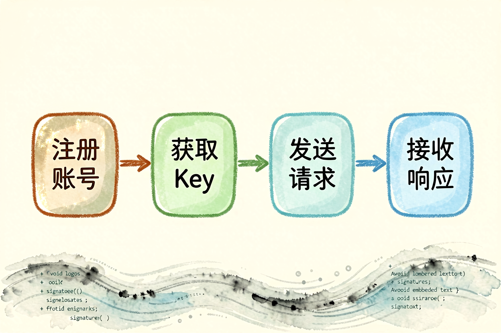

DeepSeek 新手教程：国产大模型的全场景使用指南
DeepSeek 是国内最实用的国产大模型之一，免费额度大方、中文理解强、不依赖翻墙。本文从零讲清怎么用、用到什么程度、哪些坑要避开。
DeepSeek新手教程是本文的核心主题。 !配图1DeepSeek界面概览
{kind=link}
DeepSeek新手入门：国产大模型的全能选手
DeepSeek 是深度求索公司开发的国产大模型，支持网页版和 API 调用。免费额度对普通用户足够：每天约 100 条消息，单次对话 32K 上下文。中文理解能力强，逻辑推理和代码生成接近 GPT-4 水平，且国内直连无需翻墙。
和DeepSeek 与 ChatGPT 对比里讲的差异不同，本文侧重「怎么用」而不是「比什么」。DeepSeek 的免费额度比 ChatGPT 宽松，国内访问无障碍，是新手入门国产大模型的首选。但要注意，免费档不支持高级功能如联网搜索、文件上传，需要这些功能得升级付费档。
DeepSeek新手入门：注册与界面熟悉
打开 deepseek.com，用手机号或邮箱注册。注册后界面分三块：左侧对话历史、中间聊天区、右侧工具栏。左侧可切换历史对话，中间是主输入区，右侧有文件上传、联网搜索、代码执行等功能开关。
新手建议先关掉联网搜索和文件上传，用纯文本对话熟悉交互逻辑。这三个功能虽然强大，但触发条件复杂，新手容易搞混。纯文本对话稳定可控，等熟练后再开高级功能。
DeepSeek新手入门：写出高质量的提示词

和AI 提示词怎么写里讲的 C.L.E.A.R. 框架一致，DeepSeek 也吃结构化提示词。示例：
你是资深数据分析师（角色）。
帮我分析这份销售数据，找出增长最快的三个产品（任务）。
数据包含产品名、销量、增长率三列（背景）。
输出表格形式，按增长率降序排列（输出格式）。DeepSeek 的中文理解比海外模型更自然，直接写中文提示词效果最好。遇到复杂任务，先让 AI 出大纲，再逐段展开，比一次性要长文更稳。
DeepSeek新手入门：五个高频场景实战
场景一：写作与润色让 DeepSeek 帮你起草邮件、报告、文案。生成的初稿再手动调整，效率比从零写高三倍。
场景二：代码辅助即使不会编程，也能让 DeepSeek 写简单脚本。比如「写一个 Python 脚本，批量重命名文件夹里的图片」。输出后让它加注释，方便理解。
场景三：数据分析上传 CSV 文件，让 DeepSeek 做清洗、统计、可视化。免费版支持文件上传，但单次不超过 20MB，大文件要拆分。
场景四：学习辅导问「用初中生能听懂的话解释量子计算」，DeepSeek 会换一种表达降低理解门槛。遇到不懂的术语，让它举例说明。
场景五：头脑风暴 「给我十个关于健康饮食的选题，要求新颖不烂大街」。DeepSeek 能快速产出大量想法，你挑合适的再深入。
DeepSeek新手入门：常见误区与避坑
误区一：把所有问题都扔给 DeepSeek实时信息、专业医疗建议、法律判断，DeepSeek 不一定靠谱。重要信息要二次核实，别直接采信。
误区二：提示词太模糊 「帮我写点东西」这种问法，DeepSeek 只能猜你的意图。提示词越具体，输出越精准。
误区三：免费额度用光就停免费额度每天刷新，不是每月。用完等第二天即可，不需要付费。
关于 DeepSeek 新手教程，核心经验是「先熟悉，再深挖」。别一上来就开所有高级功能，先用纯文本对话跑通基本流程，确认理解交互逻辑后再逐步解锁。
DeepSeek 新手教程的关键是动手试。别看完就忘，当天就用一次，让操作成为习惯。用多了自然熟练，不用死记硬背。
本文信息核对于 2026-09-07。AI 产品的价格、免费额度与功能变动频繁，实际以各工具官网当前说明为准。